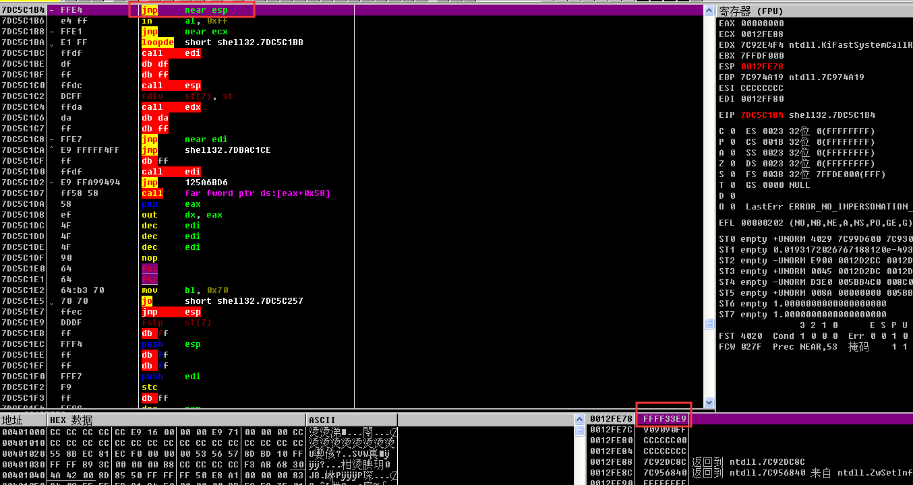

DEP,全称是Data Excution Protection,中名叫数据执行保护，是XP+sp2,Win2K03+sp1中加入的对内存的一种保护，用来防止恶意程序对系统的攻击。
保护原理
DEP 的基本原理是将数据所在内存页标识为不可执行，当程序溢出成功转入shellcode 时，程序会尝试在数据页面上执行指令，此时CPU 就会抛出异常，而不是去执行恶意指令。
DEP 的主要作用是阻止数据页（如默认的堆页、各种堆栈页以及内存池页）执行代码。根据实现的机制不同可分为：软件DEP（Software DEP）和硬件DEP（Hardware-enforced DEP）
软件DEP 其实就是我们前面介绍的SafeSEH，它的目的是阻止利用S.E.H 的攻击，这种机制与CPU 硬件无关，Windows 利用软件模拟实现DEP，对操作系统提供一定的保护。
硬件DEP 才是真正意义的DEP，硬件DEP 需要CPU 的支持，AMD 和Intel 都为此做了设计，AMD 称之为No-Execute Page-Protection (NX)，Intel 称之为Execute Disable Bit (XD)。
操作系统通过设置内存页的NX/XD 属性标记，来指明不能从该内存执行代码。为了实现这个功能，需要在内存的页面表（Page Table）中加入一个特殊的标识位（NX/XD）来标识是否允许在该页上执行指令。当该标识位设置为0 里表示这个页面允许执行指令，设置为1 时表示该页面不允许执行指令。
一个和DEP 密切相关的程序链接选项：/NXCOMPAT。/NXCOMPAT 是Visual Studio 2005 及后续版本中引入一个链接选项，默认情况下是开启的
采用/NXCOMPAT 编译的程序会在文件的PE 头中设置IMAGE_DLLCHARACTERISTICS_NX_COMPAT 标识，该标识通过结构体IMAGE_OPTIONAL_HEADER 中的DllCharacteristics变量进行体现，当DllCharacteristics 设置为0x0100 表示该程序采用了/NXCOMPAT 编译
DEP 针对溢出攻击的本源，完善了内存管理机制。通过将内存页设置为不可执行状态，来阻止堆栈中shellcode 的执行。
DEP的自身限制：
首先，硬件DEP 需要CPU 的支持，但并不是所有的CPU 都提供了硬件DEP 的支持，在一些比较老的CPU 上边DEP 是无法发挥作用的。
其次，由于兼容性的原因Windows 不能对所有进程开启DEP 保护，否则可能会出现异常。例如一些第三方的插件DLL，由于无法确认其是否支持DEP，对涉及这些DLL 的程序不敢贸然开启DEP 保护。再有就是使用ATL 7.1 或者以前版本的程序需要在数据页面上产生可以执行代码，这种情况就不能开启DEP 保护，否则程序会出现异常。
再次，/NXCOMPAT 编译选项，或者是IMAGE_DLLCHARACTERISTICS_NX_COMPAT的设置，只对Windows Vista 以上的系统有效。在以前的系统上，如Windows XP SP3 等，这个设置会被忽略。也就是说，即使采用了该链接选项的程序在一些操作系统上也不会自动启用DEP 保护。
最后，当DEP 工作在最主要的两种状态Optin 和Optout 下时，DEP 是可以被动态关闭和开启的，这就说明操作系统提供了某些API 函数来控制DEP 的状态。同样很不幸的是早期的操作系统中对这些API 函数的调用没有任何限制，所有的进程都可以调用这些API 函数，这就埋下了很大的安全隐患，也为我们突破DEP 提供了一条道路。
攻击未启用DEP的程序
电脑不能对所以程序都开启DEP，当加载的耨个进程中的加载模块有模块不支持DEP，则这个进程就不能开启DEP，所以就可以选择攻击未启用DEP保护的程序。
利用Ret2Libc挑战DEP
DEP 保护下溢出失败的根本原因是DEP，检测到程序转到非可执行页执行指令了，已经存在的系统函数必然存在于可执行页上，所以此时DEP 是不会拦截的，Ret2libc攻击的原理也正是基于此的
Ret2libc 是Return-to-libc 简写，由于DEP 不允许我们直接到非可执行页执行指令，我们就需要在其他可执行的位置找到符合我们要求的指令，让这条指令来替我们工作，为了能够控制程序流程，在这条指令执行后，我们还需要一个返回指令，以便收回程序的控制权，然后继续下一步操作
简言之，只要为shellcode 中的每条指令都在代码区找到一条替代指令，就可以完成exploit想要的功能了。理论上说，这种方法是可行的，但是实际上操作难度极大。姑且不说是不是shellcode 中的每条指令都能在代码区找到替代指令，就算所有替代指令都找好了，如何保证每条指令的地址都不包含0x00 截断字符呢？栈帧如何去布置呢？我们不断使用替代指令执行操作，然后通过 retn 指令收回控制权，不停地跳来跳去，稍有不慎就跳沟里去了。
为此，有三种方法解决：
（1）通过跳转到ZwSetInformationProcess 函数将DEP 关闭后再转入shellcode 执行。
（2）通过跳转到VirtualProtect 函数来将shellcode 所在内存页设置为可执行状态，然后再转入shellcode 执行。
（3）通过跳转到VIrtualAlloc 函数开辟一段具有执行权限的内存空间，然后将shellcode 复制到这段内存中执行。
利用ZwSetInformationProcess函数突破DEP
一个进程的DEP 设置标识保存在KPROCESS 结构中的_KEXECUTE_OPTIONS 上，而这个标识可以通过API 函数ZwQueryInformationProcess 和 ZwSetInformationProcess 进行查询和修改。
_KEXECUTE_OPTIONS 的结构：1
2
3
4
5
6
7
8_KEXECUTE_OPTIONS
Pos0:ExecuteDisable :1bit
Pos1:ExecuteEnable :1bit
Pos2:DisableThunkEmulation :1bit
Pos3:Permanent :1bit
Pos4:ExecuteDispatchEnable :1bit
Pos5:ImageDispatchEnable :1bit
Pos6:Spare :2bit
这些标识位中前4 个bit 与DEP 相关，当前进程DEP 开启时ExecuteDisable 位被置1，当进程DEP 关闭时ExecuteEnable 位被置1，DisableThunkEmulation 是为了兼容ATL 程序设置的，Permanent 被置1 后表示这些标志都不能再被修改。真正影响DEP 状态是前两位，所以我们只要将_KEXECUTE_OPTIONS 的值设置为0x02（二进制为00000010）就可以将ExecuteEnable置为1。
NtSetInformationProcess函数：1
2
3
4
5ZwSetInformationProcess(
IN HANDLE ProcessHandle,
IN PROCESS_INFORMATION_CLASS ProcessInformationClass,
IN PVOID ProcessInformation,
IN ULONG ProcessInformationLength );
第一个参数为进程的句柄，设置为−1的时候表示为当前进程；第二个参数为信息类；第三个参数可以用来设置_KEXECUTE_OPTIONS，第四个参数为第三个参数的长度。Skape 和Skywing 在他们的论文Bypassing Windows Hardware-Enforced DEP 中给出了关闭DEP 的参数设置。
1 | ULONG ExecuteFlags = MEM_EXECUTE_OPTION_ENABLE; |
所以我们只要构造一个的合乎要求的栈帧，然后调用这个函数就可以为进程关闭DEP了.函数包含着0x00的截断字符，这会造成字符串复制的时候被截断，所以我们得寻找一处关闭DEP的进程调用，然后利用它来构造参数来关闭DEP。
由于要考虑兼容性的问题，当一个进程的Permanent 位没有设置，当它加载DLL时，系统就会对这个DLL 进行DEP 兼容性检查，当存在兼容性问题时进程的DEP 就会被关闭。为此设立了LdrpCheckNXCompatibility 函数，当符合以下条件之一时进程的DEP 会被关闭：
（1）当DLL 受SafeDisc 版权保护系统保护时；
（2）当DLL 包含有.aspcak、.pcle、.sforce 等字节时；
（3）Windows Vista 下面当DLL 包含在注册表“HKEY_LOCAL_MACHINE\SOFTWARE\Microsoft\ Windows NT\CurrentVersion\Image File Execution Options\DllNXOptions”键下边标识出不需要启动DEP 的模块时。
如果我们能模拟其中一种情况，那么DEP就会被关闭，我们先来模仿第一种情况，Windows XP SP3 下LdrpCheckNXCompatibility 关：闭DEP 的具体流程，以SafeDisc 为例：
接下来寻找程序中未启用DEP的程序
由于只有CMP AL，1 成立的情况下程序才能继续执行，所以我们需要一个指令将AL 修改为1。将AL 修改为1 后我们让程序转到0x7C93CD24 执行，在执行0x7C93CD6F 处的RETN4 时DEP 已经关闭，此时如果我们可以在让程序在RETN 到一个我们精心构造的指令地址上，就有可能转入shellcode 中执行了。
1 | // GS_Virtual.cpp : 定义控制台应用程序的入口点。 |
对实验思路和代码简要解释如下:
（1）为了更直观地反映绕过DEP 的过程，我们在本次实验中不启用GS 和SafeSEH。
（2）函数test 存在一个典型的溢出，通过向str 复制超长字符串造成str 溢出，进而覆盖函数返回地址。
（3）将函数的返回地址覆盖为类似MOV AL,1 retn 的指令，在将AL 置1 后转入0x7C93CD24关闭DEP。
（4）DEP 关闭后shellcode 就可以正常执行了。
为了避免strcpy时shellcode被截断，我们需要选择一个不包含0x00的地址，使用0x7C92E252 覆盖函数的返回地址。数组一共176个字节，4个字节的ebp地址，接下来写返回地址0x7C92E252。
main()函数返回地址已经被修改:
跳转到mov ax,1，然后rent地址被修改 将EBP指向一个可写的位置 只能寻找到一个PUSH ESP POP EBP的位置
接下来增大ESP的值 由于关闭DEP后无法返回 所以需要对ESP进行调整
然后跳转到ESP
跳到关闭DEP代码的位置
关闭DEP的代码
然后执行回跳指令

程序回归正常执行 弹出熟悉的弹框